Terminaciones
Contents
{kind=link}
22. Terminaciones#
Mondaca(2020), señala en su trabajo de investigación “Diagramas de flujo aplicados a terminaciones de obra gruesa de edificaciones” que: “Las terminaciones de obra gruesa son aquellas que proporcionan un acabado especifico en muros, cielo y piso, tanto en zonas húmedas como zonas secas de un edificio, además de considerar reparaciones. Tienen la finalidad de ser el paso anterior al revestimiento final.”
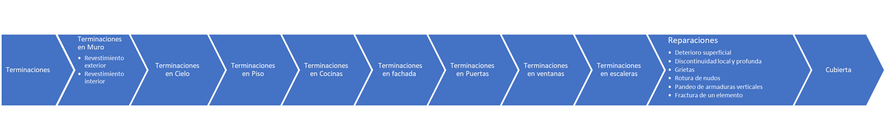{kind=link}
22.1. Terminaciones en Muro#
Los materiales más usados para esta partida son los estucos, pinturas, anticorrosivos, enchapados de madera, cerámicas, tapices, mármol, granito, entre otros (Stozitzky & Prieto,1989).
22.1.1. Revestimiento exterior#
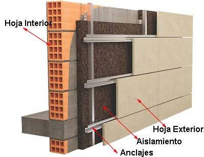{kind=link}
22.1.2. Revestimiento interior#
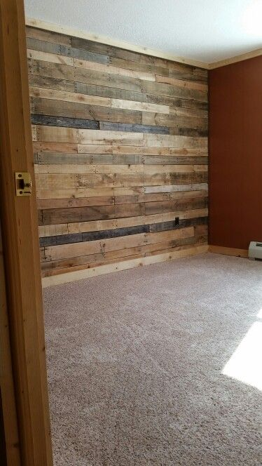{kind=link}
22.2. Terminaciones en Cielo#
los materiales mas recurrentes en obra son los enlucidos en yeso y el empaste de yeso cartón en cielo (Mondaca, 2020).
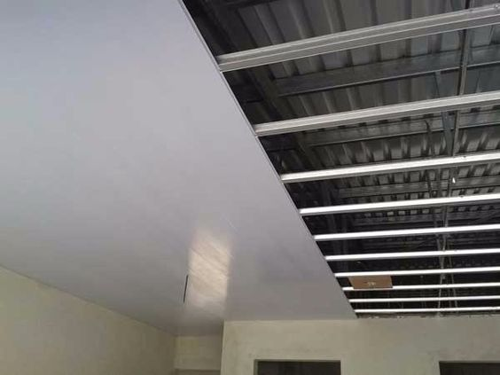{kind=link}
22.3. Terminaciones en Piso#
Los materiales mas utilizados en los pisos son cerámica, baldosas madera, pisos de hormigón, adoquines, vinilos, linóleo, alfombras, nivelado de piso, retape de losas, afinado de radier entre otros (Stozitzky & Prieto,1989).
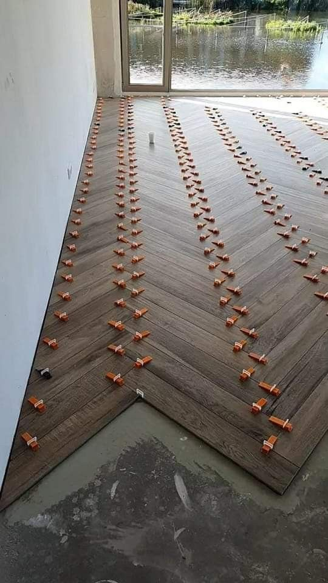{kind=link}
22.4. Terminaciones en Cocinas#
“Materiales adecuados para pisos y paredes, cocina integral, estufas entre otros” (Stozitzky & Prieto,1989).
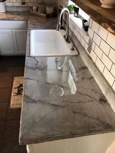{kind=link}
22.5. Terminaciones en fachada#
“Los materiales mas usados son los estucos, pinturas, mosaicos, mármoles, granitos, piedras artificiales, perfiles de aluminio, cristales entre otros” (Stozitzky & Prieto,1989).
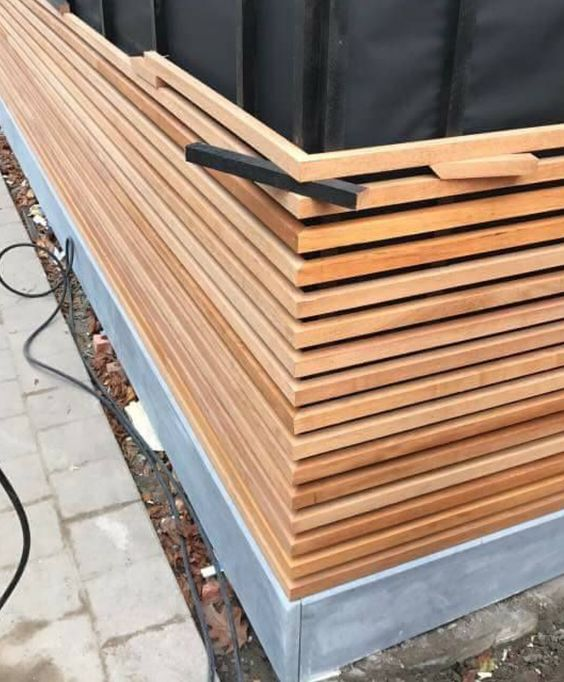{kind=link}
22.6. Terminaciones en Puertas#
Los tipos de puertas, según su funcionamiento dentro de la obra entre ellas están sujetas en uno de sus lados o abatibles, corredizas, giratorias, plegables. Según su tipo de material pueden ser de madera, metal, cristal, materiales sintéticos (Stozitzky & Prieto,1989).
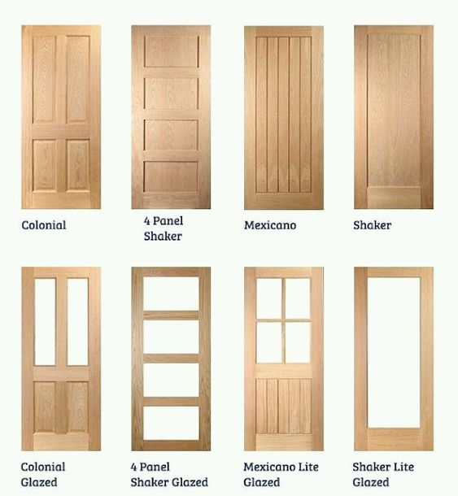{kind=link}
22.7. Terminaciones en ventanas#
Tienen como función dar paso de la luz del exterior, al interior de la obra de construcción, además de proveer ventilación, con el paso de aire fresco dacia en interior. Estas deben ser impermeables y estancas, ajustando perfectamente contra el marco o vano. Pueden ser corredizas, tipo guillotina, de bisagra, o en forma de persiana y según su material, de madera, de perfiles de acero, aluminio, PVC, termo panel, estos se complementan con el uso de cristal (Stozitzky & Prieto,1989).
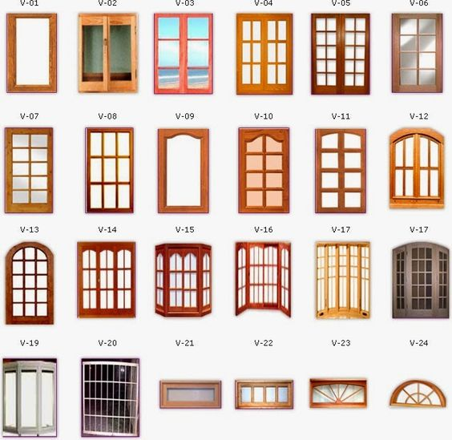{kind=link}
22.8. Terminaciones en escaleras#
Se usan cerámicas, granito, mármol, para el revestimiento de los peldaños y barandas y pasamanos de madera, metal o acrílico como complemento.
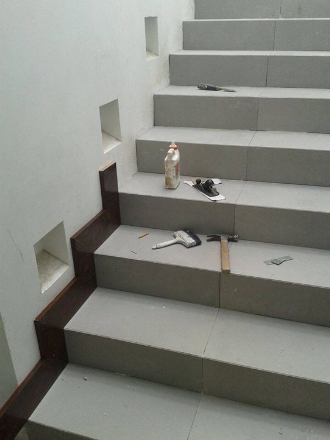{kind=link}
22.9. Reparaciones#
ICH (2010), en su “Manual de técnicas de Reparación y reparación” señala que las fallas en una estructura generalmente se manifiesta de forma externa, cuya evaluación puede revelar el significado, la causa y las posibles consecuencias.
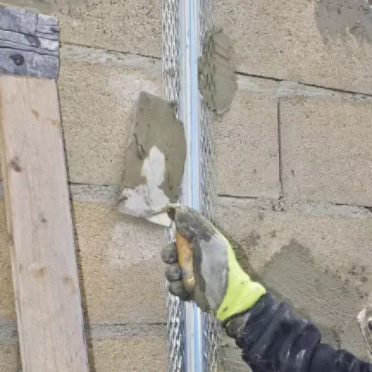{kind=link}
Algunas manifestaciones externas de fallas en el hormigón:
Deterioro superficial
{kind=link}
Discontinuidad local y profunda
{kind=link}
Grietas
{kind=link}
Rotura de nudos
{kind=link}
Pandeo de armaduras verticales
{kind=link}
Fractura de un elemento
{kind=link}
22.10. Cubierta#
La cubierta, que remata toda la estructura, debe ser impermeable y ofrecer aislamiento para proteger el interior de los elementos exteriores, el ruido y los cambios de temperatura. La cubierta se colocará para permitir el drenaje rápido del agua mientras evita que el agua ingrese al interior. La cubierta descansa sobre componentes estructurales como hormigón, acero o madera y debe sujetarse de forma segura.
Los materiales más comunes utilizados son tejas de asfalto, de cemento, de barro, láminas de metal (zinc, canaletas), tejas de plástico reforzado y concreto inclinado u horizontal que ha sido impermeabilizado.
{kind=link}